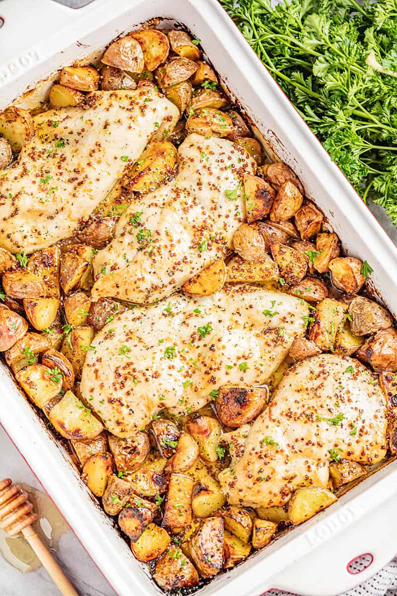

Baked Honey Dijon Chicken and Potatoes

Baked Honey Dijon Chicken and Potatoes is an easy weeknight dinner that will leave you wanting to lick the pan clean! It’s hearty, filling, and a complete dinner all made in one pan.
Looking for an easy weeknight dinner? Then look no further! This delicious dinner calls for whole ingredients and pantry staples for that essential made-from-scratch flavor. It only takes minutes to put together and pop in the oven, leaving you plenty of time to catch up with the family before sitting down to dinner.We took our deliciously addicting Honey Roasted Smashed Potatoes and turned it into a complete meal. The sauce is absolutely killer! Every time we make it, people are fighting over who gets to lick the pan. But honestly, can you blame them?
Ingredients:
- ½ cup butter melted
- 1/4 cup honey
- 2 tablespoons whole grain dijon mustard
- ½ teaspoon salt
- ½ teaspoon dried oregano
- 4 boneless skinless chicken breasts
- 10 small red potatoes quartered
- salt and pepper to taste
Steps
- Preheat oven to 375 degrees. Lightly grease a 9x13 baking dish.
- In a small mixing bowl, whisk together melted butter, honey, dijon mustard, salt, and oregano.
- Place chicken breasts into the baking dish. Surround the chicken with the quartered potatoes. Drizzle honey mustard mixture over everything.
- Bake in the preheated oven for about 40 minutes, until potatoes are tender and chicken reaches an internal temperature of 165 degrees.
- Give potatoes a good toss and season with salt and pepper to taste before serving.